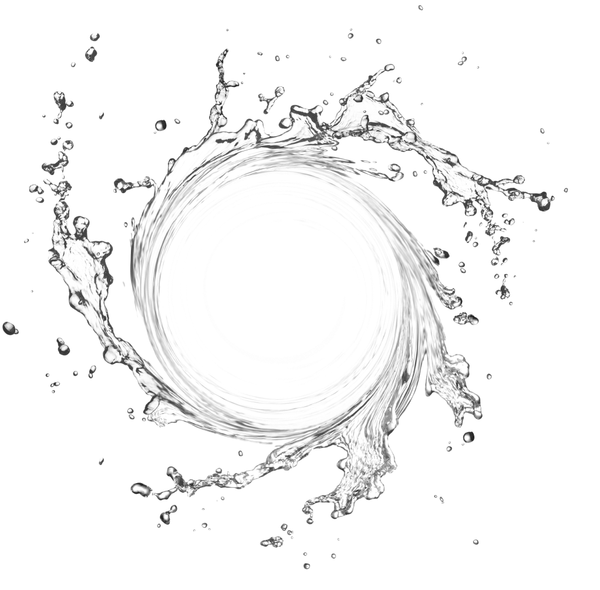
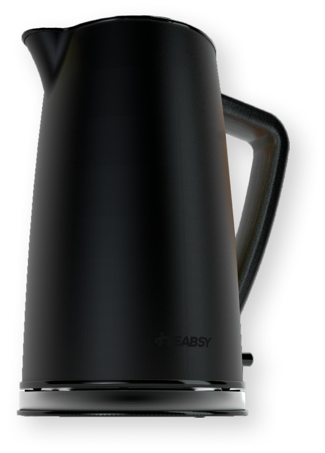
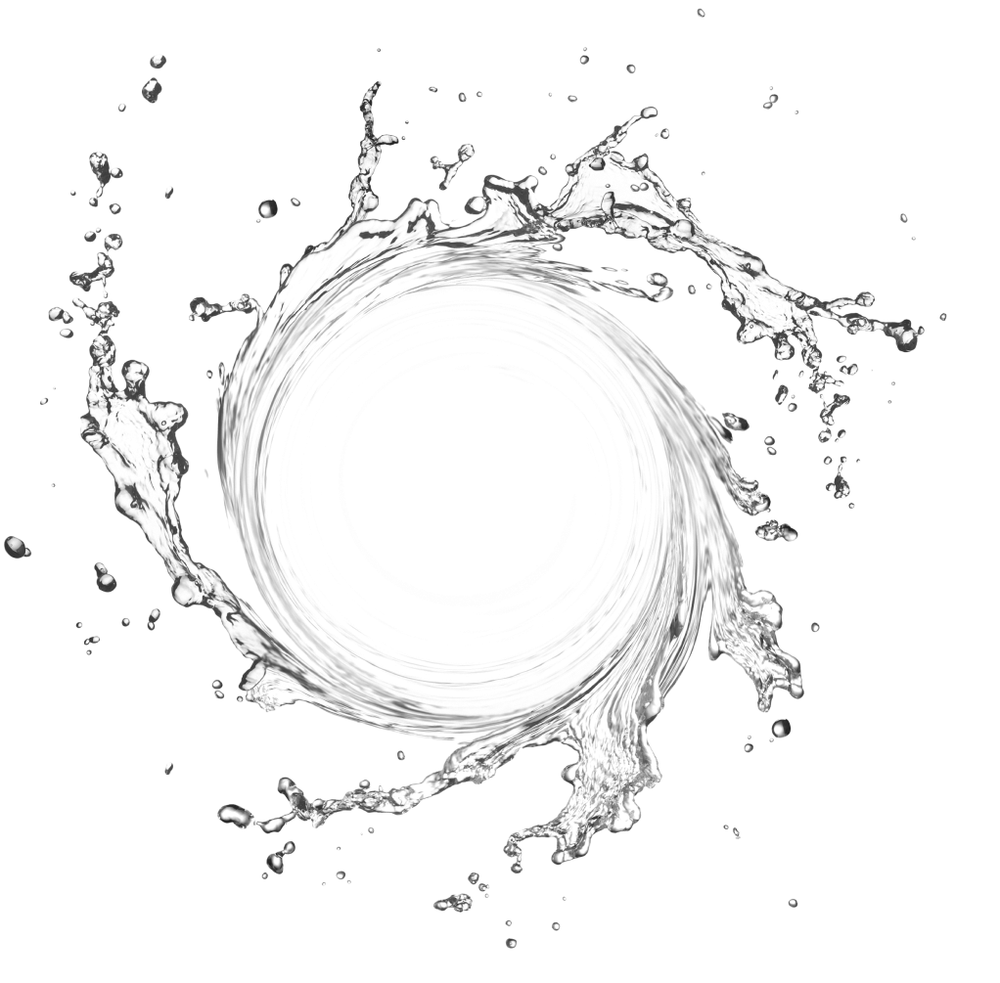
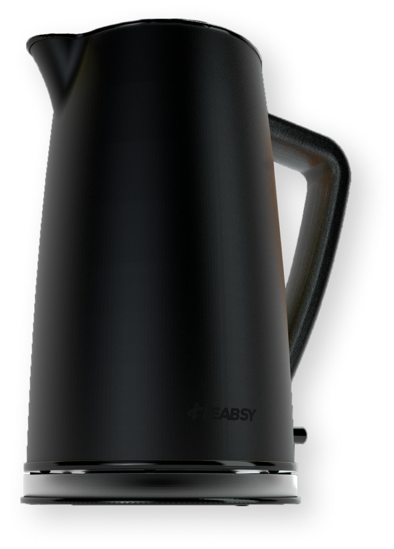
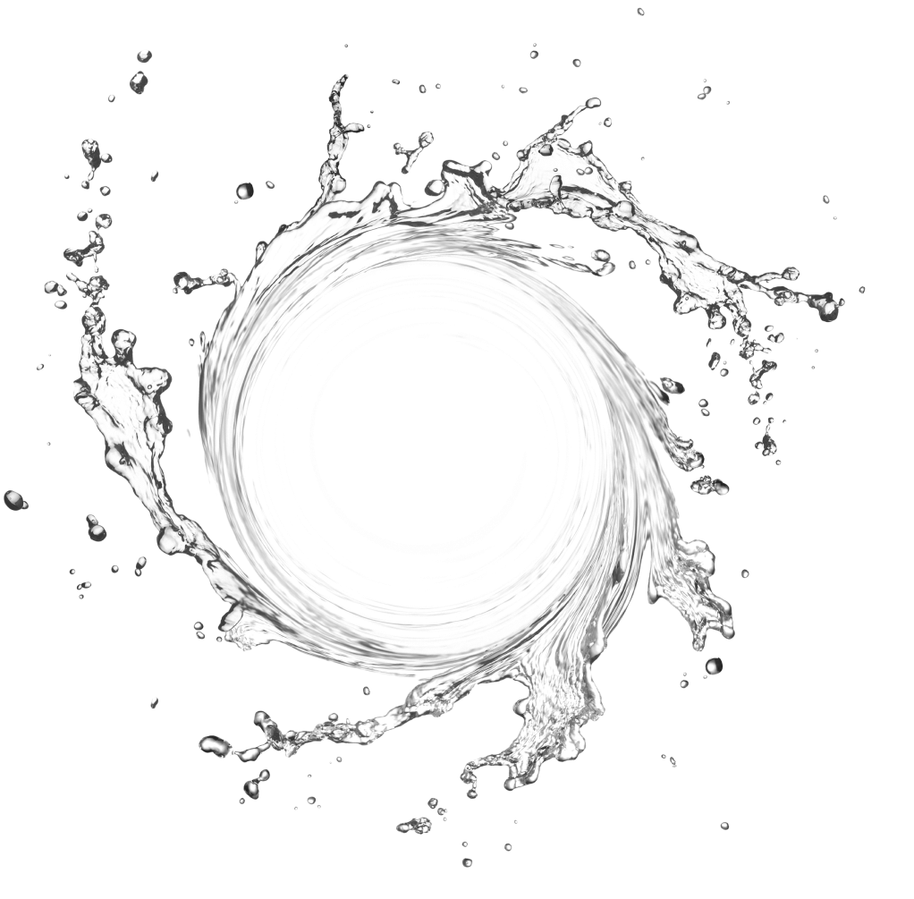
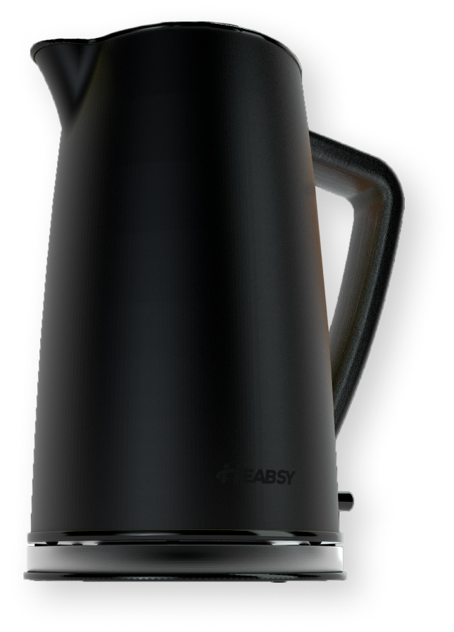

Стильный и мощный электрический чайник Heabsy работает так же хорошо, как и выглядит.
Имеет большой объем 1,7 литра.


Стильный и мощный электрический чайник Heabsy работает так же хорошо, как и выглядит.
Имеет большой объем 1,7 литра.


Первая встреча
Дизайн разработан в скандинавском стиле.
Минимализм в сочетании с деревом впишется в любой интерьер кухни. Комбинация покрытия из нержавеющей стали, дерева и резины делает наш чайник прочным и легким в уходе.
Дизайн разработан в скандинавском стиле.
Минимализм в сочетании с деревом впишется в любой интерьер кухни. Комбинация покрытия из нержавеющей стали, дерева и резины делает наш чайник прочным и легким в уходе.


Цвет важен
4 цвета на выбор.
Желтый как солнце или розовый как ягода? Хорошее настроение на день будет обеспечено если у вас на кухне есть наш чайник


Воды хватит всем
Вмещает от шести до восьми чашек воды, поэтому никто не будет ждать пока чайник закипит второй раз ( даже не смотря на то что он быстро закипает).


Внимание к деталям
Беспроводная подставка для пируэта на 360 ° обеспечивает легкий подъем, а эргономичный дизайн удобен для наливания, даже если чайник полный.


Надежный и практичный
Скрытый нагревательный элемент мощностью 2200 Вт и съемный фильтр. Быстро закипает и разработан для минимизации образования накипи